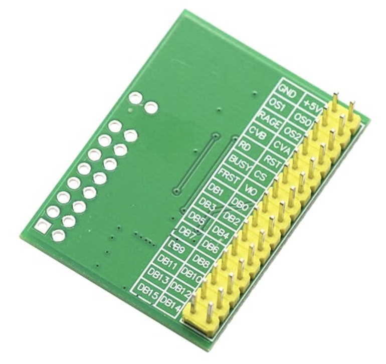
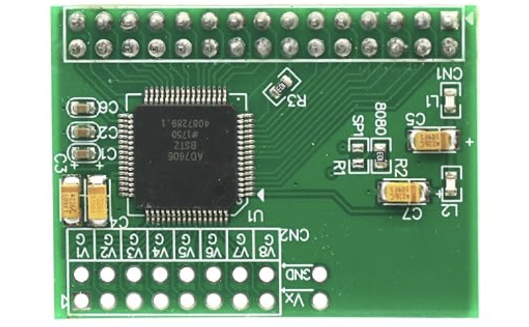

Local row/position numbers below are documentation aids, not manufacturer pin numbers. Electrical continuity is untested.
Orient the GND/+5V end at the top. Inner column faces board center; edge column faces the nearby long board edge. Do not apply this left/right layout directly from the component side.
| Local row | Inner column | Edge column |
|---|---|---|
| 1 | GND | +5V |
| 2 | OS1 | OS0 |
| 3 | RAGE | OS2 |
| 4 | CVB | CVA |
| 5 | RD | RST |
| 6 | BUSY | CS |
| 7 | FRST | VIO |
| 8 | DB1 | DB0 |
| 9 | DB3 | DB2 |
| 10 | DB5 | DB4 |
| 11 | DB7 | DB6 |
| 12 | DB9 | DB8 |
| 13 | DB11 | DB10 |
| 14 | DB13 | DB12 |
| 15 | DB15 | DB14 |
RAGE is the printed RANGE label. The VIO label appears VO/VIO; confirm chip pin23 continuity.

As photographed: V1 at left through V8 at right; V signals are in the row nearest the board edge, their paired G pads are toward the chip. VX is a separate unverified pad: leave it unconnected.
